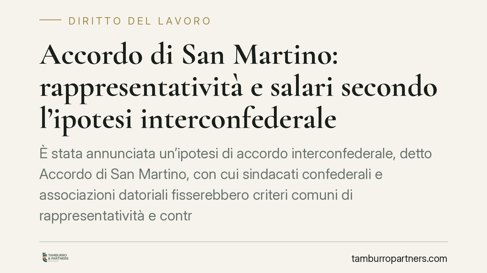

Accordo di San Martino: rappresentatività e salari secondo l'ipotesi interconfederale
È stata annunciata un'ipotesi di accordo interconfederale, detto Accordo di San Martino, con cui sindacati confederali e associazioni datoriali fisserebbero criteri comuni di rappresentatività e contratti di riferimento per il salario adeguato. Si tratterebbe di un'intesa di diritto privato, non ancora formalizzata. Chi applica o subisce un CCNL ha interesse a comprenderne portata ed effetti reali.

Di cosa si parla
Secondo quanto riferito dalla stampa di settore, sindacati confederali e diverse associazioni datoriali avrebbero sottoscritto un'ipotesi di accordo interconfederale, indicato come Accordo di San Martino. Il testo definirebbe criteri comuni di misurazione della rappresentatività, individuerebbe i contratti collettivi di riferimento per la determinazione di un salario adeguato, mirerebbe a contrastare i cosiddetti contratti pirata e introdurrebbe tempi certi per i rinnovi con meccanismi di adeguamento retributivo.
Si tratta, allo stato, di un'ipotesi di accordo di diritto privato, soggetta a successiva formalizzazione. Gli effetti concreti dipenderanno dal testo definitivo e dall'adesione delle organizzazioni coinvolte. Finché l'intesa non è sottoscritta in via definitiva, le considerazioni che seguono vanno lette al condizionale.
Inquadramento normativo
Il punto di partenza è l'articolo 39 della Costituzione. La seconda parte della norma prevede un meccanismo di registrazione dei sindacati e di contrattazione collettiva con efficacia generale (erga omnes), cioè vincolante per tutti i lavoratori e datori della categoria. Quel meccanismo non è mai stato attuato.
La conseguenza è decisiva: i contratti collettivi nazionali (CCNL) hanno natura privatistica e vincolano, in linea di principio, solo gli iscritti alle organizzazioni firmatarie o chi vi aderisce espressamente. Non esiste un CCNL automaticamente obbligatorio per tutti. Un'intesa interconfederale, per quanto autorevole, resta un atto negoziale: può orientare la contrattazione, ma non supplisce alla mancata attuazione dell'art. 39.
Diverso è il piano della retribuzione. L'articolo 36 della Costituzione garantisce una retribuzione proporzionata e sufficiente. Su questa base la Corte di cassazione, con una serie di pronunce del 2023 (tra cui Cass. sez. lav. n. 27711/2023), ha affermato che il giudice può disattendere i minimi di un CCNL quando risultino inadeguati rispetto all'art. 36, utilizzando come parametro i contratti di settore più rappresentativi. L'eventuale individuazione, in sede interconfederale, dei contratti di riferimento si innesta proprio su questo orientamento.
Il nodo dei contratti pirata e la rappresentatività
Con l'espressione contratti pirata si indicano i CCNL stipulati da organizzazioni poco rappresentative, spesso con trattamenti economici inferiori, usati per comprimere il costo del lavoro. Il problema nasce dall'assenza di una misurazione ufficiale e condivisa della rappresentatività.
L'ipotesi di accordo si collocherebbe su questo terreno, fissando criteri comuni di misurazione. Nel dibattito è ricorrente il riferimento al ruolo del CNEL, che già cura l'archivio nazionale dei contratti collettivi e potrebbe assumere funzioni in tema di certificazione dei dati sulla rappresentatività. Anche qui, in assenza di una fonte legale attuativa dell'art. 39, l'efficacia resterebbe quella propria di un'intesa tra le parti aderenti.
Implicazioni pratiche
Per le imprese, l'eventuale individuazione di contratti di riferimento incide sul rischio di contenzioso retributivo. L'applicazione di un CCNL con minimi distanti dai contratti leader può esporre a rivendicazioni fondate sull'art. 36, anche a prescindere dall'accordo.
Per i lavoratori, il profilo rilevante è la possibilità di contestare una retribuzione non adeguata, confrontandola con i contratti più rappresentativi del settore.
Cosa fare in concreto
- Imprese: verificare quale CCNL è concretamente applicato e la sua collocazione rispetto ai contratti di settore più rappresentativi.
- Imprese: monitorare l'evoluzione dell'intesa e del testo definitivo prima di assumere decisioni organizzative basate su di essa.
- Lavoratori: controllare la corrispondenza della retribuzione ai minimi del CCNL e, se inferiore, confrontarla con i contratti di riferimento del settore.
- Entrambi: conservare la documentazione contrattuale e le buste paga, utile in sede di verifica della congruità retributiva.
- Entrambi: valutare l'opportunità di un esame tecnico prima di avviare o resistere a una controversia.
Prospettiva
L'intesa, se confermata, agirebbe nel perimetro del diritto privato: un'indicazione forte alle parti sociali, non un'estensione generalizzata dei contratti. La questione di fondo, cioè l'attuazione dell'art. 39 e un sistema certo di rappresentatività, resta aperta.
---
Contributo informativo a cura di Tamburro & Partners Avvocati – Avv. Giuseppe Tamburro. Non costituisce parere legale.
Ogni storia di lavoro ha i suoi tempi.
Se gestisci HR e vuoi un confronto su contenzioso, ispezioni o licenziamenti, scrivi allo studio. Ti rispondiamo entro un giorno lavorativo.